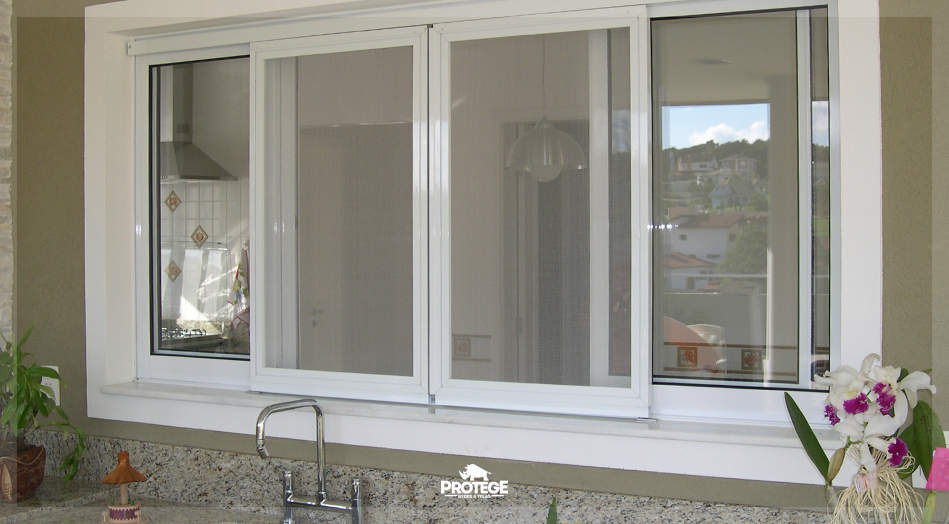
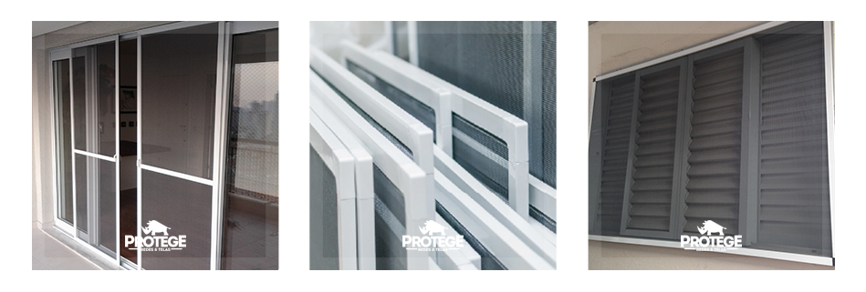

Uma das especialidades de Protege é o desenvolvimento de telas mosquiteiras. Criamos telas mosquiteiras sob medida e utilizamos como material estruturas em alumínio para fixar a tela. Assim como nas redes de proteção utilizamos o polietileno virgem para as telas mosquiteiras. Isso garante que sua tela mosquiteira dure muito mais tempo, uma vez que o alumínio não enferruja e a tela de polietileno possui tratamentos especiais contra os raios ultravioleta além de ser impermeável.
Além da utilização em domicílios esta tela mosquiteira também pode ser instalada em diversos locais como restaurantes, lugares que trabalham com medicamentos e outros setores industriais onde o uso deste tipo de tela é obrigatório pela vigilância sanitária.
A tela mosquiteira é muito útil para evitar que insetos entrem em determinados locais e pode ser utilizada também em áreas abertas tais como churrasqueiras e salões de festas para evitar que folhas e outros resíduos entrem no local deixando assim o lugar limpo e arejado ao mesmo tempo.
Mas fique atento, a tela mosquiteira não garante a proteção. Caso queira evitar a entrada de insetos e outros resíduos e garantir segurança de pessoas, crianças e animais ao mesmo tempo você precisará instalar tanto a tela mosquiteira quanto a rede de proteção.